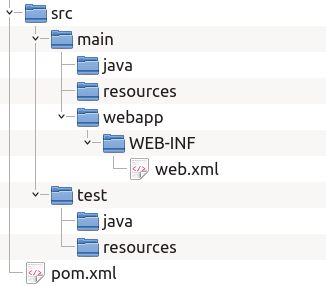
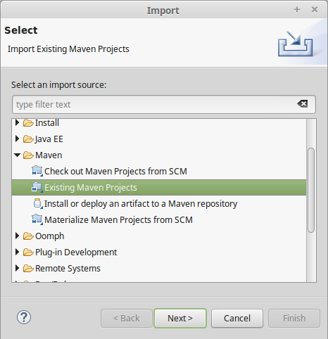
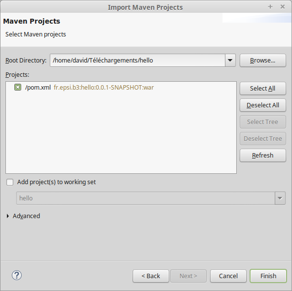

Avant d'aborder le développement d'application Java EE, nous allons introduire un outil supplémentaire : Maven.
Maven est un outil open source de la communauté Apache entièrement écrit en Java. Il permet d'automatiser la gestion et la construction d'un projet Java : ce que l'on appelle communément un outil de build.
Maven se présente comme un exécutable en ligne de commande mais il est également intégré nativement dans les IDE les plus courants dans le monde Java : Eclipse, Intellij IDEA, NetBeans.
Pourquoi utiliser Maven ?
Nous avons vu qu'il est possible de créer et d'exécuter des projets Java EE directement dans Eclipse. Alors pourquoi utiliser Maven ? Si un IDE peut suffire pour gérer des projets simples, cette solution s'avère rapidement limitée :
- Comment partager mon projet avec d'autres développeurs quand ils n'ont pas exactement la même configuration de poste que la mienne et qu'ils n'utilisent pas le même IDE que moi ?
- Comment compiler et tester mon projet en dehors d'un IDE (par exemple dans un processus d'intégration continue) ?
- Comment automatiser certaines tâches répétitives et limiter ainsi les erreurs ou les oublis ?
Pour résoudre tous ces problèmes (et d'autres encore), le plus simple est d'utiliser un outil tel que Maven.
Caractéristiques principales de Maven
L'outil de construction de projet le plus célèbre est sans aucun doute make. Make permet de définir des tâches avec des commandes associées et des dépendances entre ces tâches.
Maven part d'une approche très différente : il découpe le cycle de construction du projet en phases pré-définies et le développeur peut paramétrer ou ajouter des tâches à effectuer automatiquement pour chacune des phases. Les principales phases dans Maven sont :
- compile : compilation du code source du projet
- test : compilation du code source des tests et exécution des tests
- package : construction du livrable (pour une application Web, il s'agit de l'archive WAR)
Maven ajoute la possiblité de gérer automatiquement les dépendances logicielles. Pour développer des applications Java EE, nous allons avoir besoin de bibliothèques externes (les fichiers .jar en Java). Plutôt que d'aller les télécharger une à une depuis le Web et de les ajouter dans Eclipse, nous allons signaler à Maven l'identifiant des dépendances dont nous aurons besoin et il va se charger pour nous de les télécharger depuis un référentiel centralisé (Maven central repository), de les stocker dans un cache sur la machine et de les associer à notre projet.
Enfin les concepteurs de Maven ont adopté une approche normative afin de garantir une homogénéité entre les projets. Ainsi un projet Maven se conforme à une organisation assez stricte des répertoires et des fichiers.
Installation de Maven
Maven est nativement intégré dans Eclipse. Il est tout de même utile de disposer de cet outil en ligne de commande (notamment pout mettre en place un processus d'intégration continue).
Maven se présente sous la forme d'une archive à télcharger à http://maven.apache.org
Une fois téléchargé, vous pouvez extraire ou vous voulez et ajouter le répertoire apache-maven-3.3.9/bin dans votre chemin d'exécution.
Un premier projet avec Maven
Un projet Maven possède toujours un fichier pom.xml à la racine du projet. Ce fichier XML est le descripteur du projet et contient toutes les informations nécessaires à Maven pour gérer le cycle de vie du projet.
Téléchargez et décompressez maintenant l'archive hello-webapp.zip. Cette archive contient le projet Maven minimal pour une application Web qui va nous servir d'exemple.
Maven impose une arborescence minimale des fichiers afin de garantir une homogénéité entre tous les projets.
- pom.xml
- A la racine du projet, on trouve le fichier pom.xml, le descripteur du projet pour Maven.
- src/main
- Ce répertoire contient les fichiers de l'application. On trouve au moins le sous répertoire java contenant les sources Java. Le sous répertoire resources accueille les fichiers qui ne sont pas des sources Java mais qui doivent être présents avec les fichiers compilés dans l'application finale (il s'agit souvent de fichiers de configuration). Enfin pour une application Web, le sous répertoire webapp correspond à la racine du site Web. On retrouve à l'intérieur le répertoire WEB-INF et le fichier WEB-INF/web.xml.
- src/test
- Ce répertoire contient les fichiers utilisés pour tester l'application. On trouve le sous répertoire Java contenant les sources Java des tests unitaires. Le sous répertoire resources accueille les fichiers qui ne sont pas des sources Java mais qui sont nécessaires à l'éxécution des tests (il s'agit souvent de fichiers de configuration pour les tests).
Il existe un dernier répertoire à connaître, le répertoire target. Ce répertoire n'est pas présent dans l'arborescence du projet hello-webapp. Il s'agit du répertoire de travail de Maven. Ce répertoire est créé automatiquement par Maven pour stocker tous les fichiers de travail. On y trouve les classes compilées, les fichiers sources générés automatiquement, le livrable final, les rapports d'exécution des tests...
Le fichier pom.xml
Le fichier pom.xml est le descripteur de projet pour Maven. Il s'agit d'un fichier XML présent à la racine du projet qui est lu par Maven pour lui fournir les informations du projet.
Le contenu du fichier pom.xml du projet hello-webapp est le suivant :
<project
xmlns="http://maven.apache.org/POM/4.0.0" xmlns:xsi="http://www.w3.org/2001/XMLSchema-instance"
xsi:schemaLocation="http://maven.apache.org/POM/4.0.0 http://maven.apache.org/xsd/maven-4.0.0.xsd">
<!--
La version du format du fichier pom.
Actuellement la dernière version est la 4.0.0.
-->
<modelVersion>4.0.0</modelVersion>
<!--
Le group ID de l'application. Le group ID
s'apparente à un package Java mais pour un projet. Il évite
une colision de nom dans le cas de deux projets ayant le même nom
puiqu'ils peuvent avoir des group ID différents.
Ainsi si deux projets s'appelle hello et qu'ils ont des group ID
différents, ils sont considérés comme étant des projets différents.
-->
<groupId>fr.epsi.b3</groupId>
<!--
Le nom du projet
-->
<artifactId>hello</artifactId>
<!--
La version de notre projet. Maven gère le versionnage
afin de permettre le suivi des évolutions d'un projet.
Ici, le suffixe "-SNAPSHOT" indique à Maven que le projet
est en cours de développement pour cette version.
-->
<version>0.0.1-SNAPSHOT</version>
<!--
Le type de packaging, c'est-à-dire le type de projet.
Ici, on indique à Maven que le projet doit être packagé
sous la forme d'un WAR. Donc pour Maven, il s'agit d'une
application Web.
-->
<packaging>war</packaging>
<!--
Les propriétés de notre projet. On peut définir des propriétés
spécifiques au projet ou des propriétés standard à Maven pour
paramétrer la construction du projet.
-->
<properties>
<!--
Propriété standard définissant la version minimale de Java supportée
par les fichiers sources (ici 1.8 pour Java 8).
-->
<maven.compiler.source>1.8</maven.compiler.source>
<!--
Propriété standard définissant la version Java des fichiers compilés
du projet (ici 1.8 pour Java 8).
-->
<maven.compiler.target>1.8</maven.compiler.target>
<!--
Le format d'encodage des fichiers source du projet. Attention, l'encodage
par défaut n'est pas le même sous Windows et sous les systèmes *NIX.
Il est donc plus sage de toujours positionner cette propriété dans le fichier pom.xml.
-->
<project.build.sourceEncoding>UTF-8</project.build.sourceEncoding>
</properties>
</project>
Ce fichier pom.xml donne les informations minimales à Maven :
- Le projet s'appelle fr.epsi.b3:hello
- La version actuelle est la 0.0.1 et il s'agit d'une version de travail
- Le projet est une application Web Java EE (war)
- Le projet est écrit en Java 8 et les sources sont encodées en UTF-8
La documentation complète du format du fichier pom.xml est disponible à cette adresse.
Import du projet Maven dans Eclipse
Eclipse intègre nativement Maven et permet donc de développer des projets basés sur Maven.
Pour intégrer le projet hello dans votre espace de travail Eclipse, choisissez le menu "File > Import..." puis sélectionnez dans la section "Select an import source" le type "Maven > Existing Maven Projects".
Cliquez sur "Next". Dans l'écran "Import Maven Projects", cliquez sur "Browse..." pour sélectionner le répertoire contenant le fichier pom.xml de votre projet. Ensuite, cliquez sur "Finish".
Le projet Maven est maintenant intégré dans Eclipse.
Test de l'application dans TomEE
Comme pour le chapitre précédent, ajouter le fichier hello.html dans votre projet dans le répertoire src/main/webapp :
<!DOCTYPE html>
<html>
<head>
<meta charset="UTF-8">
<title>Hello Java EE</title>
</head>
<body>
<p>Hello Java EE</p>
</body>
</html>
Ajoutez l'application hello dans votre serveur TomEE et démarrez le serveur.
Vérifiez que l'application est déployée en tentant d'accéder depuis votre navigateur Web à l'adresse : http://localhost:8080/hello/hello.html
Gérer le projet avec Maven
Vous pouvez utiliser la ligne de commande mvn depuis le répertoire contenant le fichier pom.xml pour réaliser les opérations sur un projet.
Maven crée un répertoire de travail nommé target dans lequel il stocke les fichiers produits (y compris les fichier war)
mvn cleanmvn compilemvn testmvn package